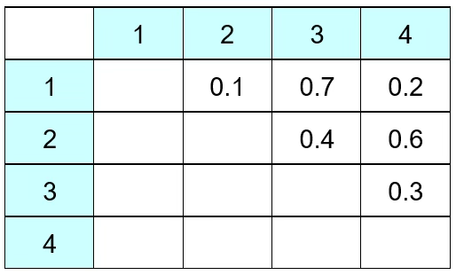
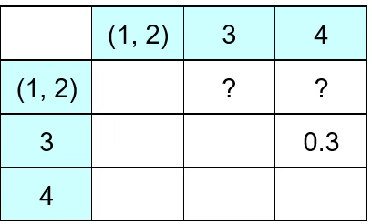
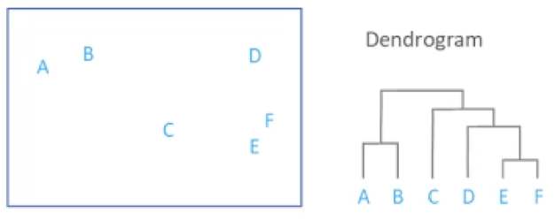
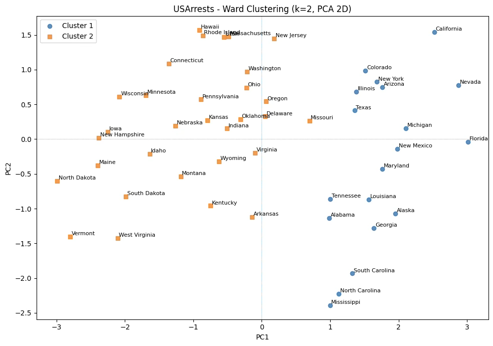

다변량분석 5. 군집분석(계층적, 비계층적방법)
Chapter 1. 군집분석 개요
1. 군집분석 개념
(1) 군집분석 목적 및 개념
군집분석의 기본 목적은 자료 속에 잠재되어 있는 구조(structure)를 탐색하고, 변수들 간의 유사성에 기반하여 자연스럽게 형성되는 집단(clusters)을 발견하는 데 있다. 즉, 사전에 집단 정보가 주어지지 않은 상황에서 개체들 사이의 거리 또는 유사성을 분석하여, 내재된 패턴을 파악하고 데이터가 어떠한 방식으로 스스로 그룹화되는지를 밝히는 것이 군집분석의 핵심 목표이다.
개체 간의 간격을 직관적으로 파악하기 위해 시각적 도구를 활용할 수 있다. 변수의 개수에 따라 사용되는 대표 시각화 기법은 다음과 같다.
측정 변수가 2개일 때 → 산점도(Scatter Plot)
측정 변수가 3개일 때 → 버블 플롯(Bubble Plot) x축, y축, 버블 크기(또는 색)를 이용하여 3차원 정보를 2D에서 표현
측정 변수가 4개 이상일 때 → 주성분 분석(PCA)을 이용한 산점도, 고차원의 변수를 2~3개의 주성분으로 차원 축소한 뒤 시각적으로 군집 패턴 탐색한다.
(2) 군집분석과 판별분석 비교
군집분석(clustering)과 판별분석(discriminant analysis)은 모두 개체들을 여러 집단으로 나누거나 구분하는 데 사용되는 다변량 분석 기법이지만, 출발점과 목적, 그리고 사용되는 정보의 종류가 서로 다르다.
군집분석(Clustering)
군집분석은 사전에 집단 정보가 전혀 주어지지 않은 상태에서, 개체들 간의 유사성(similarity) 또는 거리(distance)를 기준으로 집단을 구성하는 방법이다. 즉, 데이터가 관측될 때는 모든 개체가 동일한 상태로 취급되며, 분석 과정에서 서로 가까운 개체끼리 묶어 자연스럽게 군집이 형성되는 비지도 학습(unsupervised learning) 절차이다.
군집 형성 방식은 크게 두 가지로 나눌 수 있다.
계층적 군집분석(Hierarchical clustering): 개체 간 거리가 가까운 것끼리 순차적으로 묶어 나가며, 트리 형태(dendrogram)의 구조를 형성하는 방법이다.
비계층적 군집분석(K-means 등): 군집의 개수 K를 미리 정해두고, 중심점(centroid)을 기준으로 개체를 반복적으로 재배정하여 군집을 형성하는 방법이다.
판별분석(Discriminant Analysis)
판별분석은 군집분석과 달리, 자료 수집 단계에서 이미 집단(label)이 주어진 상태에서 출발한다. 즉, 각 개체가 어느 모집단에 속하는지 정보가 주어져 있으며, 이 정보를 이용하여 집단 간 차이를 가장 잘 설명하는 판별함수를 추정하는 분석이다.
판별분석의 목표는 두 가지이다.
집단 간 차이 설명: 어떤 변수들이 집단 구분에 기여하는지 파악한다.
새로운 개체의 집단 판별: 추정된 판별규칙(classification rule)을 이용하여 새로운 표본이 어느 집단에 속할지를 예측한다.
마케팅 담당자가 고객 세분화를 위해 나이, 학력, 소득, 결혼 상태, 자녀 수, 직업 등의 정보를 수집하였다면, 이와 같은 다변량 정보를 이용하여 고객들을 서로 유사한 특성을 가진 집단으로 묶는 방법이 바로 군집분석이다. 군집분석은 개체 간의 유사성 또는 거리 측정을 바탕으로, 자료 속에 내재된 구조를 찾아 자연스럽게 형성되는 고객 그룹을 탐색하는 비지도 학습(unsupervised) 기법이다.
군집분석의 중요한 특징은 분석 전에는 어떤 개체가 어떤 그룹에 속하는지, 그리고 그룹이 몇 개인지조차 알려져 있지 않다는 점이다. 다시 말해, 집단의 이름과 개수는 분석이 수행된 후에야 결정된다. 이러한 이유로 군집분석은 grouping, classification, 또는 unsupervised classification이라고 불리기도 한다.
반면, 판별분석(Discriminant Analysis)은 상황이 정반대이다. 판별분석에서는 자료 수집 단계에서 이미 개체가 속한 집단 변수가 포함되어 있으며, 이 집단 정보에 기반하여 집단을 가장 잘 구분하는 판별함수(discriminant function)를 찾는 것이 목표이다. 즉, 판별분석은 지도 학습(supervised learning)의 형태로, 새로운 개체가 주어졌을 때 어느 집단에 속할지를 예측하는 데 초점을 둔다.
(3) 군집분석 장단점
군집분석은 데이터에 내재된 구조를 탐색하여 서로 유사한 개체들을 그룹화하는 비지도 학습 기법으로, 다양한 분석 상황에서 널리 활용된다. 그러나 유연성이 큰 만큼 결과의 안정성과 해석 측면에서 주의해야 할 점도 많다. 아래에서는 군집분석의 주요 장점과 단점을 정리한다.
장점
1. 탐색적(Exploratory) 분석 기법: 군집분석은 사전에 집단 정보를 요구하지 않기 때문에, 자료 내부 구조에 대한 가정 없이 의미 있는 패턴이나 자연스러운 그룹을 탐색해낼 수 있다. 따라서 데이터의 숨겨진 구조를 파악하거나 시장세분화, 유형화, 패턴 탐색 등 초기 탐색 단계에서 매우 유용하다.
2. 다양한 형태의 데이터에 적용 가능: 유사성을 정의할 수만 있다면, 수치형 데이터뿐 아니라 범주형, 이진형, 심지어 텍스트 데이터에도 적용할 수 있다.
자연어 처리에서는 단어/문서 간 유사도 기반 군집
마케팅에서는 고객 행동 데이터 기반 세분화
생물정보학에서는 유전자 발현 패턴 군집화
즉, ”거리(distance)” 또는 ”유사도(similarity)“가 정의되기만 하면, 자료의 형태에 큰 제약이 없다.
3. 적용 용이성 및 직관성: 자료의 사전 정보가 없기 때문에 누구나 쉽게 적용할 수 있으며, 기초적인 산점도나 거리 개념을 통해 직관적으로 이해할 수 있다. 계층적 군집이나 K-means 알고리즘은 구현도 간단하고 계산 속도도 빠르기 때문에 실무에서 활용도가 높다.
단점
1. 거리 및 가중치 정의에 민감: 군집분석의 핵심은 개체 간 유사성을 측정하는 거리인데, 거리의 정의가 달라지면 군집 결과도 크게 달라진다. 또한 변수마다 가중치를 어떻게 설정하느냐에 따라서도 결과가 크게 변한다.
표준화 유무에 따라 K-means 결과가 완전히 달라짐
Manhattan vs Euclidean 거리 선택에 따라 군집 경계 변화 → 즉, 메타 결정이 분석 결과에 매우 민감하다.
2. 군집 수 결정의 어려움: K-means처럼 군집 수를 지정해야 하는 알고리즘에서는 적절한 군집 수(K)를 결정하는 것이 쉽지 않다. Elbow method, Silhouette score, Gap statistic 등 다양한 기준이 존재하지만, ”정답”은 존재하지 않는다.
3. 결과 해석의 어려움: 군집은 데이터로부터 자동적으로 형성되므로,형성된 군집이 무엇을 의미하는지는 분석자가 별도로 해석해야 한다.종종 군집이 다음과 같은 문제를 가질 수 있다.
군집이 의미하는 특성이 명확하지 않음
군집 간 차이를 설명하기 어려움
외부 변수(인구학적 특성 등) 없이는 군집의 특성을 파악하기 어려움
이러한 경우 주성분 분석(PCA)으로 차원을 줄여 군집 특성을 시각화하거나, 군집별 외부 특성 요약을 통해 군집의 의미를 재해석해야 한다.
(4) 군집분석 활용
시장세분화 (마케팅)

시장 세분화는 구매 태도, 구매 성향, 매체 사용 습관, 인구사회학적 특성 등에서 서로 유사한 성향을 지닌 소비자 집단을 찾아내고, 이러한 내재된 군집을 바탕으로 시장을 의미 있는 하위 단위로 나누는 과정이다. 예를 들어 나이, 성별, 직업, 학력, 거주지와 같은 변수들을 이용하면, 소비자들의 행동적·사회적 특성에 따라 자연스럽게 차별적인 그룹이 형성된다. 실제 예시 표에서는 전체 소비자를 ’추종자’, ’EB’, ’기본 기능’과 같은 세 집단으로 나누었으며, 각 집단은 서로 다른 인구학적 프로필을 가진다는 점을 보여준다.
시장 세분화의 핵심 목적은 소비자를 분류함으로써 그들의 행동 패턴을 보다 정교하게 이해하는 데 있다. 즉, 특정 특성(측정 변수)에 따라 소비자를 군집화함으로써, 표면적으로는 드러나지 않는 내재적 특성을 도출할 수 있으며, 이러한 특성은 소비자 행동 연구나 타깃 마케팅 전략을 수립하는 데 매우 유용하다.
또한 시장 세분화는 잠재적 신제품 기회 탐색에도 기여한다. 전체 시장을 하나의 동질적 집단으로 보지 않고 경쟁 상황이나 기업 특성에 따라 하위 시장을 구분하면, 각 세분시장에서 보다 명확한 수요와 니즈를 파악할 수 있게 된다. 이는 기업이 전략적으로 우위를 확보할 수 있는 영역을 발견하는 데 도움을 준다.
더 나아가, 세분화된 집단은 **표본추출 설계(sample design)**에도 활용될 수 있다. 조사 대상 지역이나 소비자를 구분해야 하는 상황에서 군집분석을 통해 서로 유사한 특성을 가진 대상을 묶어 계층을 구성하면, 이후 표본추출 과정이 단순해지고, 표집의 정확성이 향상된다. 즉, 세분화는 마케팅 전략뿐 아니라 조사 방법론 측면에서도 실질적인 장점을 제공한다.
고객 세분화

고객 세분화는 기업이 보유한 고객들을 하나의 동질적 집단으로 보지 않고, 고객별 가치·행동·특성의 차이에 따라 하위 집단으로 나누는 과정이다. 예를 들어, 고객의 수입(기업에 대한 매출 기여도)과 브랜드 인지도(브랜드와의 친밀도 또는 충성도)를 두 축으로 고려하면, 그림과 같이 고객들이 자연스럽게 두 개 정도의 군집으로 나뉜다. 이 중 기업의 수익에 더 크게 기여하면서 브랜드 인지도도 높은 고객군은 마케팅 공략 대상(target segment)으로 선정될 수 있다.
고객 세분화의 목적은 단순한 분류가 아니라, 기업의 수익 창출과 전략적 의사결정을 보다 정교하게 수행하기 위한 기반을 마련하는 데 있다. 다음은 대표적인 활용 방향들이다.
1. 고객 기여도 기반 세분화
고객이 기업의 수익에 얼마나 기여하는지를 기준으로 고객을 구분함으로써, 고가 제품 위주 구매 고객, 반복 구매 고객, 단발성 구매 고객과 같은 전략적 차이를 명확히 파악할 수 있다.
이러한 세분화는 CRM(Customer Relationship Management)의 핵심으로, 각 고객군에 맞는 차별적 관리 전략 수립을 가능하게 한다.
2. 우수 고객의 특성 및 생활패턴 파악
특정 고객군이 높은 가치를 창출하는 것으로 확인되면, 그들의 인구통계적 특성, 소비습관, 생활패턴을 파악하여 더 정교한 개별고객 맞춤 관리가 가능해진다. 연령대별 맞춤 프로모션, 관심사 기반 추천 서비스, 구매 이력 기반 개인화 마케팅
3. 표적 집단 구성(Target Group Design)
신상품 판촉, 교차판매(cross-selling), 업셀링(up-selling) 등의 목적을 위해 특정 특성을 공유하는 고객을 표적 집단으로 구성한다. 이는 군집분석을 활용하여 유사한 특성을 가진 고객을 묶고, 해당 그룹을 대상으로 맞춤 전략을 실행하는 과정으로 이어진다.
(5) 유사성과 비유사성 개념
다변량 자료에서 개체들을 분류하거나 군집화하려면, 먼저 개체 간의 관계를 정량적으로 측정해야 한다. 이때 사용되는 가장 기본적 개념이 유사성(similarity)과 비유사성(dissimilarity)이다.
유사성은 두 개체가 얼마나 비슷한지를 나타내고, 비유사성은 얼마나 다른지를 나타낸다. 유사성은 값이 클수록 두 개체가 닮았음을 의미하며, 비유사성은 값이 클수록 서로 다름을 의미한다. 군집분석에서 개체들은 보통 비유사성(거리)이 작은 개체들끼리 묶여 군집을 형성한다. 따라서 유사성과 비유사성의 정의는 군집 결과에 직접적인 영향을 미치는 핵심 개념이다.
1. 유사성(Similarity)
유사성은 두 개체가 서로 얼마나 비슷한지를 나타내는 개념이다. 유사성이 높다는 것은 두 개체가 속성값이 서로 가까우며, 행동·특성·측정값이 유사한 패턴을 보인다는 의미이다. 일반적으로 유사성은 값이 클수록 두 개체가 더 유사하다는 방식으로 표현된다.
- 상관계수(correlation): ±1에 가까울수록 유사
- Cosine similarity: 1에 가까울수록 유사
2. 비유사성(Dissimilarity, Distance)
반대로 비유사성은 두 개체가 서로 얼마나 다른지를 나타낸다. 이는 종종 거리(distance)라는 개념을 사용하여 정의된다. 비유사성은 값이 클수록 두 개체가 서로 더 다르다는 의미이다. 대표적인 비유사성 지표는 다음과 같다.
- 유클리드 거리(Euclidean distance)
- 맨해튼 거리(Manhattan distance)
- 마할라노비스 거리(Mahalanobis distance)
거리 기반 군집분석에서는 두 점이 가까울수록(= 비유사성이 작을수록) 같은 군집에 속할 가능성이 높다.
3. 유사성과 비유사성의 관계
유사성과 비유사성은 서로 반대개념처럼 보이지만, 실제로는 동일한 정보를 서로 다른 방식으로 표현한 것이다.
- 두 개체의 유사성이 높다는 것은 → 두 개체 간 비유사성이 낮다는 의미
- 두 개체의 비유사성이 크다는 것은 → 두 개체가 서로 유사하지 않다는 의미
즉, 분석 목적에 따라 유사성 행렬, 비유사성 행렬 중 하나를 사용하면 되고, 수학적 변환이 가능한 경우가 많다.
Chapter 2. 유사성/비유사성 척도
1. 유사성 척도
군집분석에서는 개체들 간의 유사성이 얼마나 큰지 또는 작은지를 기준으로 군집을 형성한다. 유사성은 두 개체가 패턴·특성·수치 등이 얼마나 닮았는가를 수치로 표현한 값이며, 일반적으로 값이 클수록 유사성이 높다.
유사성 척도는 자료의 형태(연속형, 범주형, 이진형, 텍스트 등)에 따라 선택해야 한다. 유사성이 정의되면, 필요할 때 이를 거리(비유사성)로 변환하여 군집 알고리즘에서 사용할 수 있다.
(1) 연속형 데이터에서 사용하는 유사성 척도
피어슨 상관계수 (Pearson Correlation Similarity)
\[\text{corr}(x,y) = r_{xy}\]
상관계수는 두 개체가 시간이나 조건의 변화에 따라 얼마나 비슷한 패턴을 보이는지를 측정하는 대표적인 유사성 척도이다. 상관계수 값이 +1에 가까울수록 두 개체의 변화 양상이 거의 동일함을 의미하므로, 패턴 유사성을 평가하는 데 매우 적합하다. 이때 상관계수는 데이터의 절대적인 크기(scale)가 아니라, 증가·감소의 방향과 형태를 비교한다는 특징이 있다.
이러한 특성 때문에 상관계수는 고차원 데이터나 시계열 자료, 혹은 소비자들의 행동 패턴처럼 변화의 형태가 중요한 분석에서 널리 사용된다. 군집분석에서도 상관 기반 유사성을 활용하는 경우가 많으며, 실질적인 군집 알고리즘에서 요구하는 거리 형식으로 활용하기 위해 상관계수를 단순히 \(d = 1 - r\) 로 변환하여 사용할 수 있다. 상관계수가 높을수록 거리 값이 작아지므로, 자연스럽게 유사한 개체끼리 가까운 위치를 갖게 된다.
예를 들어, 고객의 월별 구매 패턴(12개월 데이터)을 이용하여 고객 세분화를 수행한다고 하자. 고객 간 총 구매액의 크기가 다르더라도, 월별 증감 패턴이 비슷하다면 상관계수는 높은 값을 갖게 된다. 이 경우 상관 기반 거리를 이용한 군집분석은 유사한 구매 패턴을 가진 고객들을 효과적으로 하나의 그룹으로 묶어낼 수 있으며, 특히 마케팅에서 행동 기반 고객 세분화에 매우 유용하다.
코사인 유사도 (Cosine Similarity)
\[\text{cos}(x,y) = \frac{x \cdot y}{\parallel x \parallel \parallel y \parallel}\]
코사인 유사도는 두 벡터가 이루는 방향이 얼마나 유사한가를 측정하는 유사성 척도이다. 즉, 두 개체가 가진 값의 절대 크기보다는 패턴의 모양이 어느 정도 같은 방향을 향하고 있는지가 핵심 비교 기준이 된다. 코사인 유사도의 값은 일반적으로 0에서 1 사이(또는 상황에 따라 -1에서 1)를 가지며, 1에 가까울수록 두 벡터가 거의 동일한 방향을 가진다는 것을 의미한다. 코시인 유사도는 \(d = 1 - cos\) 거리로 군집분석에 사용된다.
이 척도는 특히 텍스트 마이닝이나 문서 분석처럼 고차원 희소(sparse) 데이터가 등장하는 분야에서 뛰어난 성능을 보인다. 단어 빈도 기반의 벡터 표현에서는 각 문서가 매우 높은 차원의 공간을 갖게 되는데, 이 경우 크기보다는 ”어떤 단어 조합을 사용하는가”라는 방향 정보가 더 의미 있는 유사성 기준이 된다. 따라서 코사인 유사도는 문서 간 의미적 유사성을 평가하는 데 적합하며, 실제로 많은 텍스트 군집분석에서 핵심 유사성 척도로 사용된다.
예를 들어 뉴스 기사를 TF-IDF 벡터로 변환하여 각 기사를 고차원 벡터로 표현한 뒤, 코사인 유사도를 통해 서로 얼마나 비슷한 주제나 표현을 갖는지를 평가할 수 있다. 이 유사도를 기반으로 군집분석을 수행하면, 주제가 비슷한 기사끼리 자연스럽게 하나의 군집을 형성하게 되며, 이는 뉴스 자동 분류, 정보 검색, 주제 모델링과 같은 다양한 응용에 활용될 수 있다.
(2) 범주형·이진형 데이터의 유사성 척도
자카드 유사도 (Jaccard Similarity)
\[\text{J}(A,B) = \frac{|A \cap B|}{|A \cup B|}\]
자카드 유사도는 두 개체가 가진 이진형(0/1) 변수 또는 집합 정보가 얼마나 겹치는지를 측정하는 유사성 척도이다. 특히 두 개체가 공통으로 1을 가지는 항목의 비율을 중심으로 유사성을 평가한다는 점이 특징이다. 예를 들어 구매 여부, 보유 여부, 특정 관심 항목의 포함 여부처럼 ”있다/없다”로 표현되는 자료에 적합하며, 고객의 구매내역이나 SNS 태그처럼 집합 기반의 특성을 지닌 데이터를 분석할 때 유용하다.
군집분석에서는 자카드 유사도를 거리로 변환하여 사용하며, 그 방식은 매우 간단하다. \(d = 1 - \text{Jaccard}\) 자카드 유사도가 높을수록 두 개체가 공유하는 항목이 많다는 의미이므로, 자카드 거리는 작아지고 두 개체는 군집에서 서로 가까운 위치로 판단된다.
예를 들어, 고객이 구매한 상품 목록을 0/1 형태로 기록한 데이터가 있다면, 같은 상품을 자주 함께 구매한 고객들끼리는 공통의 ’1’ 항목이 많아지므로 자카드 유사도가 높아지고, 자연스럽게 같은 군집으로 묶인다. 마찬가지로 SNS 사용자들이 사용하는 해시태그(Hashtag)를 집합으로 표현하면, 비슷한 태그를 사용하는 이용자들끼리 서로 높은 자카드 유사도를 띠게 되며, 이는 관심사 기반 이용자 군집화에 매우 효과적으로 활용된다.
단순 일치계수(SMC: Simple Matching Coefficient)
\[\text{SMC} = \frac{\text{일치 항목 수}}{\text{전체 항목 수}}\]
단순 일치계수(SMC)는 두 개체가 가진 이진형(0/1) 정보가 얼마나 일치하는지를 측정하는 유사성 척도이다. 자카드 계수가 ”두 개체가 공통으로 1을 가지는 경우”만을 강조하는 것과 달리, SMC는 0과 1을 동일하게 중요하게 다루며, 두 개체가 어떤 값이든 서로 같은 값을 가지면 유사하다고 판단한다. 즉, SMC는 ”두 개체가 전체 항목 중 얼마나 많은 정보를 동일하게 가지고 있는가?“를 비율로 나타내는 지표이다.
이러한 특성 때문에 SMC는 Yes/No 형태의 이진 설문 데이터를 다룰 때 매우 유용하다. 예를 들어 흡연 여부, 결혼 여부, 자동차 보유 여부처럼 단순한 소유·상태·행동을 나타내는 항목이 여러 개 있을 때, 두 응답자가 같은 응답을 많이 할수록 SMC 값은 높아지고 서로 유사한 개체로 판단된다.
실제 군집분석 예를 들면, 여러 개의 Yes/No 설문 문항을 이용하여 고객을 분류하고자 할 때 두 고객이 설문 항목에 대해 비슷한 응답 패턴을 보이면 SMC가 높아지며, 이를 바탕으로 **유사한 생활양식 또는 행동 특성을 공유하는 고객군(cluster)**을 형성할 수 있다.
Dice 계수 (Dice Coefficient)
\[\text{DICE}(A,B) = \frac{2|A \cap B|}{|A| + |B|}\]
Dice 계수는 두 집합이 얼마나 많은 공통 요소를 가지고 있는가를 측정하는 유사성 척도로, 자카드 유사도와 유사하지만 교집합의 크기를 더 크게 반영한다는 점이 특징이다.
Dice 계수는 문자열 비교(string matching), 이미지 특징 유사성 분석, 자연어처리(NLP)와 같이 데이터 요소 간의 공통 패턴이 핵심적인 분야에서 널리 사용된다. 예를 들어 DNA 염기서열처럼 특정 패턴의 일치 여부가 중요하게 작용하는 데이터에서는 동일하거나 유사한 부분서열이 많을수록 Dice 계수가 크게 나타나므로, 서열 간 유사성을 직관적으로 파악할 수 있다. 마찬가지로 소비자 검색어 집합을 비교할 때, 공통으로 검색한 키워드가 많을수록 높은 Dice 값을 갖기 때문에, 검색어 기반 소비자 군집화를 수행할 때 효과적인 척도로 활용된다.
2. 비유사성 척도
군집분석에서 개체들을 분류하는 핵심 기준은 개체들 간의 비유사성이 얼마나 큰가 또는 작은가이다. 비유사성은 두 개체가 서로 얼마나 다른지를 수치로 표현하는 척도이며, 값이 클수록 두 개체가 더 멀리 떨어져 있음, 즉 서로 다른 특성을 가지고 있음을 나타낸다. 이 비유사성은 군집분석 알고리즘(K-means, 계층적 군집 등)의 입력으로 직접 사용되며, 실제로 군집 형성은 비유사성이 작은 개체들이 서로 가까이 묶이는 방식으로 이루어진다.
비유사성 척도는 자료의 형태가 연속형인지, 범주형인지, 이진형인지 등에 따라 다양한 정의가 존재하지만, 가장 기본적인 개념은 두 벡터의 차이를 수학적으로 측정하는 것이다. 아래는 대표적인 비유사성 척도들의 개념과 공식을 정리한 것이다.
유클리드 거리(Euclidean Distance)
\[d(x,y) = \sqrt{\overset{p}{\sum_{i = 1}}(x_{i} - y_{i})^{2}}\]
유클리드 거리는 군집분석에서 가장 널리 사용되는 비유사성 척도로, 두 점 사이의 직선거리를 계산하는 방식이다. 연속형 변수로 이루어진 자료에서 개체 간 차이를 측정하는 가장 기본적인 방법이며, 거리가 클수록 두 개체가 서로 크게 다르다는 의미를 갖는다.
다만 유클리드 거리는 각 변수의 규모에 민감하기 때문에, 변수의 단위나 범위가 서로 다를 경우 표준화를 수행한 뒤 사용하는 것이 일반적이다. 이러한 특성 때문에 K-means 군집분석에서는 표준화된 연속형 변수에 대해 유클리드 거리를 기본 거리 척도로 사용하여, 서로 가깝고 유사한 개체들끼리 하나의 군집으로 묶어 나간다.
맨해튼 거리(Manhattan Distance)
\[d(x,y) = \overset{p}{\sum_{i = 1}}|x_{i} - y_{i}|\]
맨해튼 거리는 두 점 사이의 차이를 좌표별 절댓값의 합으로 계산하는 비유사성 척도로, 마치 격자(grid) 위를 직선과 수직 방향으로만 이동해 도달하는 거리와 같다고 하여 이러한 이름이 붙었다. 이 거리 척도는 각 변수의 차이를 단순한 절댓값으로 누적하기 때문에, 유클리드 거리보다 이상치(outlier)에 덜 민감한 특징을 지닌다.
또한 차원이 높아질수록 유클리드 거리는 거리의 분산이 커지고 계산의 안정성이 떨어지는 반면, 맨해튼 거리는 절댓값 기반이기 때문에 고차원 공간에서도 비교적 안정적으로 개체 간 차이를 반영할 수 있다. 이러한 특성 덕분에 고차원 데이터나 잡음이 많은 데이터 환경에서 유용하게 활용되는 거리 척도이다.
마할라노비스 거리(Mahalanobis Distance)
\[d(x,y) = \sqrt{(x - y)'S^{- 1}(x - y)}\]
마할라노비스 거리는 변수 간 상관구조를 고려하여 두 점 사이의 비유사성을 측정하는 척도로, 다변량 자료에서 개체 간 차이를 평가할 때 매우 유용하게 사용된다. 일반적인 유클리드 거리가 각 변수 축을 독립적이고 동일한 스케일로 가정하는 데 반해, 마할라노비스 거리는 변수들 사이의 공분산 구조를 반영하여 거리 값을 계산한다.
이러한 방식은 데이터가 변수 간 상관을 가지고 있거나, 변수들의 분포 폭이 서로 다른 경우에 특히 중요한데, 마할라노비스 거리는 이러한 정보까지 함께 고려하여 축 방향이 서로 다른 타원형 분포에서도 개체 간 차이를 정확하게 비교할 수 있게 한다.
이런 이유로 마할라노비스 거리는 다변량 통계 분야에서 자주 등장하며, 특히 판별분석(LDA)에서는 서로 다른 집단의 공분산 구조를 고려한 판별함수를 구성하는 데 사용되고, 이상치 탐지에서는 집단 중심에서 얼마나 벗어나 있는지를 판단하는 지표로 활용된다.
자카드 거리(Jaccard Distance) – 이진형 자료용
\[d = 1 - \text{Jaccard}(A,B) = 1 - \frac{|A \cap B|}{|A \cup B|}\]
자카드 거리는 이진형 자료나 집합형 자료에서 두 개체가 서로 얼마나 다른지를 측정하는 대표적인 비유사성 척도이다. 자카드 유사도가 두 개체가 공통으로 가진 항목의 비율을 강조하는 반면, 자카드 거리는 그 반대 개념으로, 두 개체가 서로 다르게 가진 항목이 얼마나 많은지를 반영하여 비유사성을 평가한다.
이 방식은 항목의 존재 여부(1) 또는 부재(0)가 중요한 데이터, 예를 들어 고객의 구매내역, SNS 태그, 취미나 관심사와 같이 특정 항목의 포함 여부로 표현되는 자료를 비교할 때 유용하다. 공통으로 가진 항목이 적고 각자 다른 항목을 많이 가지고 있을수록 자카드 거리는 커지며, 두 개체가 서로 상당히 다른 특성을 가진다고 판단한다. 이러한 특성 때문에 자카드 거리는 집합 기반 자료의 군집분석에서 널리 활용된다.
해밍 거리(Hamming Distance)
\[d(x,y) = \overset{p}{\sum_{i = 1}}I(x_{i} \neq y_{i})\]
해밍 거리는 문자열 또는 이진 벡터에서 서로 다른 위치가 몇 개나 되는지를 세어 비유사성을 측정하는 거리 척도이다. 두 문자열을 같은 길이로 놓고 비교했을 때, 같은 위치의 문자가 서로 다르면 그만큼 해밍 거리가 증가하며, 값이 클수록 두 문자열이 서로 더 다르다는 의미가 된다.
이 거리 척도는 특히 비트열처럼 0과 1로 표현된 데이터 비교에 적합하며, 단일 항목의 차이가 직접적인 의미를 갖는 상황에서 널리 사용된다. 예를 들어 데이터베이스에서 키 값의 오류 탐지, 통신 시스템에서 전송 오류 검출, 유전학에서 DNA 서열의 변이 위치 파악 등에서 해밍 거리는 중요한 역할을 한다. 각 위치의 일치·불일치만으로 비유사성을 판단하므로 계산이 단순하고 직관적이라는 장점이 있다.
Chapter 3. 계층적 군집분석
1. 군집화 과정
계층적 군집분석(hierarchical clustering)에서는 개체들 간의 유사성이 가장 높은 순서, 또는 비유사성이 가장 낮은 순서대로 개체들을 차례로 묶어 가며 군집을 형성한다. 여러 연결 방식(linkage method) 중에서 single-linkage clustering은 두 군집 간 거리를 정의할 때, 각 군집에서 가장 가까운 두 점 간 거리(최소 거리)를 기준으로 군집을 병합하는 방법이다.
이 방식은 자료 구조를 자연스럽게 따라가며 가장 가까운 개체 또는 군집끼리 먼저 묶어 나가는 특성을 가지기 때문에, 전체 데이터 구조를 빠르게 파악할 수 있으며 계산 효율성이 높다는 장점이 있다. 이러한 이유로 single-linkage 방법은 효율성이 높고 구현이 간단하여, 계층적 군집 방법 중 가장 기본적이면서도 널리 사용되는 방식으로 알려져 있다.
(1) 군집 간 거리 측정방법
Single-linkage 방식을 실제 군집화 절차로 구현한 방법 중 하나가 Neighbor Method이다. Neighbor Method는 개체들 간의 거리 행렬을 바탕으로, 가장 가까운 두 개체부터 순차적으로 묶어 가는 방식으로 군집 구조를 형성한다.
첫째, 처음에는 개체의 수(n)만큼의 군집이 있다. 예를 들어 개체 6개가 있고 다음은 각 개체 간 Euclidean 거리(유사성)를 계산한 표이다. 처음에는 군집은 6개이다. 개체 (1, 2) 간 거리(유사성)은 0.1, (2, 3) 개체 유사성은 0.4이다. (2, 3) 개체 간 거리는 (3, 2) 개체 거리와 동일하므로 대각 행렬 형태이다.

둘째, 유사성이 가장 가까운(거리가 가장 가까운) 개체를 군집으로 묶는다. 예제에서는 (1, 2)가 묶인다. 이제 (1, 2)와 3, 4간 거리를 어떻게 정의할 것인가?

계층적 군집분석(hierarchical clustering)에서는 군집을 병합할 때 어떤 기준으로 두 군집 간 거리를 정의하느냐가 매우 중요하다. 개체 간 거리가 주어졌다고 하더라도, ”군집과 군집의 거리”는 여러 방식으로 정의할 수 있으며, 이러한 기준에 따라 군집 형성 방식과 결과가 달라진다. 대표적인 linkage 방식은 다음 네 가지이다.
Nearest Neighbor (Single Linkage): 두 군집에 속한 개체들 중 가장 가까운 두 개체 사이의 거리를 군집 간 거리로 정의한다. \(D(A,B) = \min_{i \in A,j \in B}d(i,j)\)
Furthest Neighbor (Complete Linkage): 두 군집에 속한 개체들 중 가장 멀리 떨어진 두 개체 사이의 거리를 군집 간 거리로 정의한다. \(D(A,B) = \max_{i \in A,j \in B}d(i,j)\)
Centroid Linkage (중심 연결법): 군집의 중심점(centroid) 간의 거리를 군집 간 거리로 사용한다. \(D(A,B) = d({\overline{x}}_{A},{\overline{x}}_{B})\)
Average Linkage (Group Average Method): 한 군집의 모든 개체와 다른 군집의 모든 개체 간의 거리 평균을 군집 간 거리로 정의한다. \(D(A,B) = \frac{1}{|A||B|}\sum_{i \in A}\sum_{j \in B}d(i,j)\)

다음은 Nearest neighbor 방법에 의해 개체를 군집화 하는 과정이다. 1과 3의 거리는 0.7, 2와 3의 거리는 0.4이므로 (1, 2)와 3의 거리는 0.4가 된다. 1과 4의 거리는 0.2이고 2와 4의 거리는 0.6이므로 작은 거리 0.2가 (1, 2)와 4의 거리이다.

(1, 2)의 거리는 0.4이고 3과 4의 거리는 0.3이므로 (1, 2, 4)와 3의 거리는 0.3이 된다.
(2) 군집 간 거리 측정방법 선택
계층적 군집분석에서는 Nearest(단일 연결), Furthest(완전 연결), Centroid, Average, Ward 등 여러 방식으로 군집 간 거리를 정의할 수 있다. 그러나 어느 한 방법이 항상 우수하다고 말할 수는 없으며, 각 방법은 서로 다른 군집 형태를 만들어 내기 때문에 분석 목적과 자료의 특성을 고려해 선택해야 한다.
Nearest 방식(single linkage)은 군집 간 가장 가까운 두 점의 거리를 기준으로 병합하기 때문에 서로 가까운 개체들이 빠르게 묶여 군집의 수가 적게 형성되는 경향이 있고, 그 과정에서 사슬현상(chain effect)이 발생하여 긴 형태의 군집이 만들어지기 쉽다. 반대로 Furthest 방식(complete linkage)은 군집 간 가장 멀리 떨어진 개체의 거리를 기준으로 두 군집의 분리성을 크게 유지하려 하기 때문에 상대적으로 작은 군집이 많이 남는 경향이 있다.
Centroid 방식은 각 군집의 중심점 간 거리를 이용하여 효율적으로 병합을 진행하지만, 군집이 병합되는 과정에서 거리 계산이 역전되는 문제가 발생해 다소 불안정할 수 있다. Average 방식(average linkage)은 두 군집에 속한 모든 개체 쌍의 평균 거리를 사용하여 Single과 Complete linkage의 극단성을 완화한 방법으로, 가장 안정적이고 실무에서 널리 활용되는 방식이다.
또한 Ward 방법은 군집 병합 시 군집 내 제곱합(variance)의 증가를 최소화하는 방향으로 병합을 진행하여 가장 응집력 있고 통계적으로 해석 가능한 군집을 만들어 준다. 특히 연속형 변수로 구성된 자료에서는 매우 좋은 성능을 보이는 방식으로 알려져 있다.
결국 각 방법에는 고유한 장단점이 있으므로, 실제 분석에서는 2~3개의 linkage 방법을 함께 적용해 보고, 자료 구조를 가장 잘 반영하며 해석 가능성이 높은 결과를 선택하는 것이 바람직하다. 이 중 Average linkage는 안정성과 실용성이 뛰어나 가장 널리 사용되는 방식이다.
2. 군집 개수 결정
군집의 개수를 결정하는 방법은 매우 다양하며, 단일 기준에 의존하기보다 여러 방법을 함께 사용하여 일관된 군집 수를 선택하는 것이 바람직하다. 계층적 군집에서는 덴드로그램, Mojena’s Rule, CCC가 주로 사용된다.
(1) 계층적 나무 다이어그램 (Dendrogram)
덴드로그램(dendrogram)은 개체 간의 유사성이 높은 순서대로 개체들이 어떻게 묶여 가는지를 단계적으로 보여주는 트리 구조의 그림이다. 덴드로그램에서 각 가지의 높이는 개체 또는 군집 간의 상대적 거리를 의미하며, 거리가 작을수록 서로 유사한 개체들이 먼저 결합된다.
예를 들어, 그림에서는 가장 먼저 E와 F가 서로 가장 가까운 개체로 판단되어 하나의 군집으로 묶이고, 그다음 A와 B가 결합된다. 이후 (E, F) 군집이 D와 결합하고, 다시 C와 묶여 점차 큰 군집이 형성된다. 이러한 병합 과정을 거쳐 결국 모든 개체가 하나의 군집으로 연결되는 것이 계층적 군집분석의 흐름이다.

덴드로그램을 활용하여 군집 수를 결정하는 방법은 매우 직관적이다. 그림에서 나무 형태의 수직선(가지)을 살펴보면, 높이의 급격한 증가가 나타나는 지점에서 트리를 자르는 것이 일반적인 기준이다. 예를 들어 군집의 개수를 2개로 설정하면, 덴드로그램에서 큰 분기점 위에서 수평으로 선을 그어보았을 때, (A, B)와 (C, D, E, F)처럼 자연스럽게 두 개의 큰 군집이 형성된다.
이처럼 덴드로그램은 계층적 군집 형성 과정을 시각적으로 보여주기 때문에, 군집 내의 응집력과 군집 간 분리도를 동시에 고려하여 군집의 적절한 개수를 판단할 수 있는 유용한 도구이다. 분석자는 덴드로그램을 통해 어디에서 잘라야 가장 의미 있는 그룹이 형성되는가를 판단하여, 군집의 수를 결정할 수 있다.
(2) Mojena’s Rule
계층적 군집분석에서는 개체들이 병합되는 순서를 덴드로그램으로 표현하지만, 어디에서 트리를 잘라 군집 수를 정할지 판단이 모호할 수 있다. Mojena’s Rule은 이러한 문제를 해결하기 위해 고안된 고전적 기준으로, 덴드로그램에서 나타나는 병합 거리의 분포를 통계적으로 해석하여 cut height를 수치적으로 결정하는 방법이다.
Mojena는 군집 병합 과정에서 계산되는 병합 거리 \(h_{1},h_{2},\ldots,h_{n - 1}\)을 하나의 데이터로 간주하고, 이 값들이 어떤 분포적 특성을 갖는지를 이용하여 ”비정상적으로 큰 병합 거리”가 나타나는 지점을 군집 경계로 판단할 수 있다고 보았다. 즉, 병합 높이가 갑자기 커지는 지점은 개체 간 유사성이 떨어지는 두 큰 군집이 합쳐지는 순간이므로, 이 이전 단계가 가장 자연스러운 군집 구조를 반영한다는 원리이다.
이를 위해 Mojena는 다음과 같은 기준을 제안한다.
\(h_{c} > \overline{h} + ks_{h}\), 여기서 \(h_{c}\)는 cut height 후보(어느 병합 단계의 height인지), \(\overline{h}\)는 전체 병합 거리의 평균, \(s_{h}\)는 병합 거리의 표준편차, 그리고 \(k\)는 경험적 상수(보통 2.75 ~ 3.50 범위에서 사용됨)이다.
즉, 덴드로그램에서의 병합 거리 중에서 평균보다 k배 이상 큰 병합 거리가 나타나는 지점이 자연스러운 분기점이 되며, 해당 height 위에서 트리를 자르면 적절한 군집 수가 결정된다. 이 기준은 단순히 그림을 보고 주관적으로 판단하는 것이 아니라, 병합 거리의 분포를 정량적으로 분석하여 군집 경계를 찾는다는 점에서 의미가 크다.
Mojena’s Rule은 계층적 군집분석이 처음 제안된 시기부터 꾸준히 사용되어 왔으며, 특히 덴드로그램이 복잡하거나 시각적으로 명확한 elbow가 보이지 않을 때 유용하다. 다만, 상수 k 의 선택에 어느 정도 경험적 요소가 포함되어 있으며, 자료 구조에 따라 최적의 k가 다를 수 있다는 점은 고려해야 한다. 그럼에도 불구하고, 덴드로그램 cut height를 명확한 수치 규칙으로 제시한다는 점에서 많은 교과서와 소프트웨어에서 소개되는 전통적인 기준이다.
(3) Cubic Clustering Criterion (CCC)
Cubic Clustering Criterion(CCC)은 SAS에서 개발된 군집 타당성 지표로, 특히 계층적 군집분석에서 군집 수를 결정할 때 널리 사용되는 고전적 기준 중 하나이다. CCC는 특정 군집 수 K에 대해 실제 데이터에서 얻어진 군집화 구조가, 동일한 조건에서 생성된 무작위 데이터의 군집 구조보다 얼마나 더 명확하게 분리되는지를 수치화한 값이다. 다시 말해, 군집이 실제로 존재하는지, 혹은 단순히 우연히 생긴 구조인지 비교하는 지표라고 할 수 있다.
CCC의 기본 원리는 다음과 같다.
군집이 ”정말 존재한다면”, 동일한 차원의 난수 데이터를 군집화했을 때보다 집단 간 분리도가 훨씬 더 커야 한다. 따라서 CCC는 실제 군집 구조와 난수 데이터의 군집 분리도를 비교하여, 그 차이가 큰 경우에 높은 값을 갖는다. 일반적으로 CCC 값이 2 이상이거나 뚜렷한 피크를 보이는 군집 수는 실제 데이터에서 의미 있는 군집 구조가 존재함을 시사한다.
계층적 군집분석에서 CCC는 각 병합 단계별로 계산되며, CCC 값을 K에 따라 플롯하면 데이터에서 군집 구조가 가장 또렷하게 드러나는 지점에서 샤프한 피크가 나타난다. 이 피크에 해당하는 K가 적절한 군집 수가 된다. 덴드로그램만으로 판단하기 모호한 경우, CCC는 수치적 기준을 제공한다는 점에서 실무와 연구에서 많이 활용된다.
(4) Pseudo F / Pseudo t² 통계량
계층적 군집분석에서는 각 병합 단계에서 군집의 응집력과 분리도가 어떻게 변하는지를 평가하여 적절한 군집 수를 결정할 수 있다. SAS의 PROC CLUSTER에서 제공하는 Pseudo F와 Pseudo t² 통계량은 바로 이러한 군집 구조 변화를 수치화한 지표로, 계층적 군집분석에서만 사용되는 특수한 타당성 기준이다.
Pseudo F는 K개 군집이 형성된 상태에서, 군집 간 분산과 군집 내 분산의 비율을 측정한다. 그 해석은 ANOVA의 F 비율과 유사하며, 군집이 잘 분리되어 있을수록 군집 간 분산이 커지고 군집 내 분산이 작아지므로 Pseudo F 값이 커진다.
따라서, Pseudo F가 큰 K가 잘 분리된 군집 구조를 의미한다. K를 바꿔가며 계산했을 때 Pseudo F가 높게 나타나는 지점에서 군집 수를 선택할 수 있다.
Pseudo F는 군집 전체의 분리도를, Pseudo t²는 각 병합 단계의 안정성과 응집력 변화를 평가하는 지표이다. Pseudo t² 값이 급격히 증가하거나 감소하는 지점은 군집 경계가 바뀌는 중요한 단계로, 해당 지점을 중심으로 군집 수를 결정할 수 있다. 이 두 지표는 계층적 군집분석의 군집 수 판단을 수치적으로 보완하는 데 널리 사용된다.
3. 사례 실습
(1) 메타 정보
이 데이터는 미국의 50개 주를 대상으로 수집된 자료로, 총 50개의 관측치로 이루어져 있다. 각 주에 대해 네 가지 연속형 변수가 기록되어 있으며, 이는 모두 강력범죄 발생률과 지역의 도시화 수준을 나타내는 지표들로 구성된다. 다시 말해, 살인·폭행·강간과 같은 범죄 발생률, 그리고 주별 도시 인구 비중을 함께 포함하고 있어, 범죄 패턴과 도시화 정도의 관계를 다변량적으로 살펴보기에 적합한 자료이다.
| 변수명 | 내용 | 단위 |
| Murder | 살인 사건 발생률 | 인구 10만 명당 발생 건수 |
| Assault | 폭행 사건 발생률 | 인구 10만 명당 발생 건수 |
| UrbanPop | 도시 거주 인구 비율 | % |
| Rape | 강간 사건 발생률 | 인구 10만 명당 발생 건수 |
import pandas as pd
import statsmodels.api as sm
df = sm.datasets.get_rdataset("USArrests", package="datasets").data
# 인덱스를 컬럼으로 빼서 'State'라는 변수로 사용
df = df.reset_index().rename(columns={"rownames": "State"})
df.info()(1) 계층적 군집분석 및 군집 개수 결정
import numpy as np
import pandas as pd
import statsmodels.api as sm
from sklearn.preprocessing import StandardScaler
from scipy.cluster.hierarchy import linkage, dendrogram, fcluster
import matplotlib.pyplot as plt
# ----------------------------------------
# 1. 데이터 로드 & 표준화
# ----------------------------------------
raw = sm.datasets.get_rdataset("USArrests", package="datasets").data
# State 이름 처리 불필요 (이미 인덱스가 주 이름)
raw.index.name = "State" # 선택 사항: 인덱스 이름만 붙이고 싶을 때
X = raw.values
scaler = StandardScaler()
X_scaled = scaler.fit_transform(X)
n, p = X_scaled.shape
# 전체 TSS (나중에 Pseudo F 계산에 사용)
TSS = ((X_scaled - X_scaled.mean(axis=0)) ** 2).sum()
# ----------------------------------------
# 2. 계층적 군집 (Ward)
# ----------------------------------------
Z = linkage(X_scaled, method='ward')
# ----------------------------------------
# 3. Pseudo F (Calinski–Harabasz) 계산
# ----------------------------------------
def compute_wss(X, labels):
wss = 0.0
for g in np.unique(labels):
Xg = X[labels == g]
mu = Xg.mean(axis=0)
wss += ((Xg - mu) ** 2).sum()
return wss
def pseudo_f_table(Z, X, max_k=15):
n = X.shape[0]
results = []
TSS = ((X - X.mean(axis=0)) ** 2).sum()
for k in range(2, min(max_k, n)):
labels = fcluster(Z, t=k, criterion='maxclust')
WSS = compute_wss(X, labels)
BSS = TSS - WSS
pf = (BSS / (k - 1)) / (WSS / (n - k))
results.append((k, pf))
return pd.DataFrame(results, columns=["k", "pseudo_F"])
pf_df = pseudo_f_table(Z, X_scaled, max_k=10)
print("\nCalinski–Harabasz Pseudo F:")
print(pf_df)
# ----------------------------------------
# 4. Mojena’s Rule
# ----------------------------------------
def mojena_rule(Z, c=2.75):
heights = Z[:, 2] # 병합 높이
h_mean = heights.mean()
h_std = heights.std(ddof=1)
cutoff = h_mean + c * h_std
n = Z.shape[0] + 1 # 관측치 개수
for i, h in enumerate(heights):
if h > cutoff:
# i번째 병합 이후 군집 수 = n - (i + 1)
k = n - (i + 1)
return {
"step": i + 1,
"k": k,
"height": h,
"cutoff": cutoff
}
return None
mojena_res = mojena_rule(Z, c=2.75)
print("\nMojena's Rule (c=2.75) 결과:")
print(mojena_res)
# ----------------------------------------
# 5. Duda–Hart Je(2)/Je(1) 및 pseudo T²
# ----------------------------------------
def duda_hart_pseudo_t2(Z, X):
n = X.shape[0]
clusters = {i: np.array([i]) for i in range(n)}
wss_dict = {}
def cluster_wss(idx):
if idx in wss_dict:
return wss_dict[idx]
members = clusters[idx]
Xg = X[members]
mu = Xg.mean(axis=0)
wss = ((Xg - mu) ** 2).sum()
wss_dict[idx] = wss
return wss
results = []
for step, row in enumerate(Z):
a, b, height, n_members = row
a, b = int(a), int(b)
new_id = n + step
# 새 클러스터 구성
members = np.concatenate([clusters[a], clusters[b]])
clusters[new_id] = members
# Je(2) = 합치기 전 두 군집의 WSS 합
wss_a = cluster_wss(a)
wss_b = cluster_wss(b)
Je2 = wss_a + wss_b
# Je(1) = 합친 후 WSS
Xg = X[members]
mu = Xg.mean(axis=0)
Je1 = ((Xg - mu) ** 2).sum()
wss_dict[new_id] = Je1
ratio = Je2 / Je1 if Je1 > 0 else np.nan
N1 = len(clusters[a])
N2 = len(clusters[b])
if N1 + N2 - 2 > 0 and Je1 > 0:
T2 = (ratio - 1.0) * (N1 + N2 - 2)
else:
T2 = np.nan
num_clusters = n - (step + 1)
results.append({
"step": step + 1,
"num_clusters": num_clusters,
"height": height,
"Je2_over_Je1": ratio,
"pseudo_T2": T2
})
return pd.DataFrame(results)
dh_df = duda_hart_pseudo_t2(Z, X_scaled)
print("\nDuda–Hart Je(2)/Je(1) 및 pseudo T² (상위 10단계):")
print(dh_df.head(10))
# ----------------------------------------
# 6. 덴드로그램 (Mojena 기준선 포함)
# ----------------------------------------
plt.figure(figsize=(12, 6))
dendrogram(
Z,
labels=raw.index.tolist(),
leaf_rotation=90
)
plt.title("USArrests - Ward Hierarchical Clustering")
# Mojena 기준 높이에 수평선
if mojena_res is not None:
plt.axhline(
y=mojena_res["height"],
linestyle="--",
linewidth=1,
label=f"Mojena cutoff (k={mojena_res['k']})"
)
plt.legend()
plt.tight_layout()
plt.show()Calinski–Harabasz Pseudo F 해석
Pseudo F는 군집 간 분산(BSS)이 크고 군집 내 분산(WSS)이 작을수록 큰 값을 가지므로 일반적으로 피크(최댓값) 근처의 k가 후보가 된다.
- k = 2일 때 최댓값 → 가장 뚜렷한 분리.
- k = 4는 두 번째로 높은 피크 → 4군집 구조도 상대적으로 해석 가능.
Calinski–Harabasz Pseudo F:
k pseudo_F
0 2 41.894858
1 3 34.936527
2 4 36.533996
3 5 32.009982
4 6 29.648747
5 7 28.210572
6 8 27.475667
7 9 27.648135
Mojena's Rule
Mojena의 컷오프가 약 7.93인데, 실제 Ward 병합의 최종 병합 높이(13.65)가 이를 초과하여 마지막 병합에서 기준을 충족한다. 즉, ”더 이상 분리할 의미 있는 군집 구조가 없다”는 결론을 낸다. 하지만 이것은 Mojena의 한계로, Ward 거리의 분포 특성에 따라 매우 보수적으로 동작한다. 실무적으로는 이 값을 그대로 받아들이지 않고, 덴드로그램 형태와 다른 지표(Pseudo F 등)와 함께 고려한다.
Mojena's Rule (c=2.75) 결과:
{'step': 49, 'k': 1, 'height': np.float64(13.653466603337856), 'cutoff': np.float64(7.930106044456396)}
Duda–Hart Je(2)/Je(1) 및 pseudo T² 해석
Je2/Je1 = 0 은 “합치기 전 두 군집 WSS가 0이었다”는 뜻 → 실제론 불가능
pseudo T²가 음수 → 수학적으로는 Je2/Je1 < 1 에서만 발생하는데, Je2 < Je1이라는 의미이며 비정상적 결과이다.
이 데이터에서는 Duda–Hart 기준이 안정적이지 않게 동작한다.
Duda–Hart Je(2)/Je(1) 및 pseudo T² (상위 10단계):
step num_clusters height Je2_over_Je1 pseudo_T2
0 1 49 0.207944 0.000000 NaN
1 2 48 0.353774 0.000000 NaN
2 3 47 0.433124 0.000000 NaN
3 4 46 0.499099 0.000000 NaN
4 5 45 0.540825 0.000000 NaN
5 6 44 0.559148 0.375011 -0.624989
6 7 43 0.599560 0.000000 NaN
7 8 42 0.662585 0.089663 -0.910337
8 9 41 0.710977 0.000000 NaN
9 10 40 0.718098 0.000000 NaN
덴드로그램
덴드로그램 최상단의 두 큰 가지가 매우 높은 높이(약 13.5)에서 합쳐지고 있다. 오른쪽(초록색 큰 가지), 왼쪽(주황색 큰 가지)
즉, Ward 거리 기준으로 두 초대형 블록 간의 이질성이 가장 큼을 의미한다. → 이것은 Pseudo F가 k=2에서 최대값을 갖는 이유와 정확히 일치한다. 군집을 2개로 나누면 두 그룹 간 분리가 가장 크다는 뜻입니다.

Mojena 기준선(cutoff ≈ 7.93)이 덴드로그램에 표시된 수평선이다. 실제로 데이터에서는 마지막 병합 높이(13.6)가 이 cutoff를 넘는 유일한 지점 → 그래서 Mojena 알고리즘은 ”이 시점에서 처음 기준선을 넘었다”고 판단하여 k = 1을 반환한다. (군집개수 결정 활용 불가)
import numpy as np
import pandas as pd
from scipy.cluster.hierarchy import linkage, fcluster
from sklearn.preprocessing import StandardScaler
# ---- 데이터 준비 ----
import statsmodels.api as sm
raw = sm.datasets.get_rdataset("USArrests", "datasets").data
X = StandardScaler().fit_transform(raw.values)
n, p = X.shape
# 전체 TSS
TSS = ((X - X.mean(axis=0)) ** 2).sum()
# ---- 군집 결과 ----
Z = linkage(X, method='ward')
# ---- WSS 계산 함수 ----
def compute_wss(X, labels):
wss = 0.0
for g in np.unique(labels):
Xg = X[labels == g]
mu = Xg.mean(axis=0)
wss += ((Xg - mu) ** 2).sum()
return wss
# ---- CCC 계산 ----
def compute_ccc(Z, X, max_k=10):
n, p = X.shape
TSS = ((X - X.mean(axis=0)) ** 2).sum()
results = []
for k in range(2, max_k + 1):
labels = fcluster(Z, k, criterion="maxclust")
WSS = compute_wss(X, labels)
BSS = TSS - WSS
R2 = BSS / TSS
# Expected R2 under null (SAS 방식)
E_R2 = 1 - ((n - k) / (n - 1))**(2 / p)
# Variance approximation
V_R2 = (2 * E_R2**2) / (n - 1)
CCC = (R2 - E_R2) / np.sqrt(V_R2)
results.append([k, R2, E_R2, CCC])
return pd.DataFrame(results, columns=["k", "R2", "E(R2)", "CCC"])
ccc_df = compute_ccc(Z, X, max_k=10)
ccc_dfCCC 해석
CCC ≥ 2 → 군집 구조 강함 → CCC가 높을수록 더 뚜렷한 군집 구조이므로 ”피크”(peak)를 찾는 것이 핵심이다.
- CCC가 갑자기 크게 증가하면 ”새로운 군집 구조 발견”
- CCC가 감소 or 완만해지면 ”추가 군집은 의미 없음”
k=2에서 CCC = 219.96: 매우 높은 값으로 ”두 개로 나누면 군집 구조가 극도로 강함”, 보통 4~10 정도도 큰 값인데, 200대는 압도적이다.
k=3에서 CCC = 138.56, 여전히 매우 큼, k=2보다는 낮지만 여전히 군집 구조 존재
k=4에서 CCC = 107.17, 여전히 높지만 감소 추세 시작된다.
k R2 E(R2) CCC
0 2 0.466043 0.010257 219.956775
1 3 0.597854 0.020621 138.557379
2 4 0.704374 0.031096 107.170943
3 5 0.739944 0.041685 82.912183
4 6 0.771124 0.052393 67.901102
5 7 0.797422 0.063223 57.480555
6 8 0.820765 0.074180 49.816855
7 9 0.843622 0.085268 44.021931
8 10 0.862420 0.096492 39.289737
(2) 군집 결과 활용
import numpy as np
import matplotlib.pyplot as plt
from sklearn.decomposition import PCA
from scipy.cluster.hierarchy import fcluster
# 이미 위에서 사용한 raw, X, Z를 그대로 활용한다고 가정합니다.
# raw: USArrests 데이터 (index = 주 이름)
# X : 표준화된 데이터 (X = StandardScaler().fit_transform(raw.values))
# Z : linkage(X, method='ward')
# 1. 군집 개수를 2개로 고정
k = 2
labels_2 = fcluster(Z, k, criterion='maxclust') # 1, 2 라벨
# 2. PCA 2차원으로 차원 축소
pca = PCA(n_components=2)
X_pca = pca.fit_transform(X)
# 3. 시각화
plt.figure(figsize=(10, 7))
markers = ['o', 's']
for g, m in zip([1, 2], markers):
idx = (labels_2 == g)
plt.scatter(
X_pca[idx, 0],
X_pca[idx, 1],
marker=m,
label=f'Cluster {g}',
alpha=0.8
)
# 주(State) 이름 라벨 달기
for i in np.where(idx)[0]:
plt.text(
X_pca[i, 0] + 0.02,
X_pca[i, 1] + 0.02,
raw.index[i],
fontsize=8
)
plt.axhline(0, linestyle=':', linewidth=0.5)
plt.axvline(0, linestyle=':', linewidth=0.5)
plt.xlabel('PC1')
plt.ylabel('PC2')
plt.title('USArrests - Ward Clustering (k=2, PCA 2D)')
plt.legend()
plt.tight_layout()
plt.show()
# PC1, PC2 loading matrix
loadings = pd.DataFrame(
pca.components_.T,
columns=['PC1', 'PC2'],
index=raw.columns)
print("PCA Loadings (부하값):")
print(loadings)PC1의 부하값은 Murder(0.54), Assault(0.58), Rape(0.54)에서 모두 크고 양의 값을 보인다. 즉 세 가지 주요 강력범죄 지표가 모두 같은 방향으로 작용하고 있습니다. UrbanPop도 양의 부하값이지만 크기가 상대적으로 작다. → 따라서 PC1 점수가 높은 주(State)는 Murder·Assault·Rape가 모두 높은 곳이다. PC1은 살인, 폭행, 강간 등 강력범죄 발생률이 공통적으로 높아지는 방향을 가장 잘 설명하는 축으로, ’전반적 강력범죄 수준’을 나타내는 주성분으로 해석할 수 있다.
PC2에서는 UrbanPop이 0.873으로 매우 큰 양의 부하값을 보이며, 다른 변수들은 양·음이 섞여 있고 절대값도 작다. PC2는 도시 거주 인구 비율이 가장 큰 비중으로 작용하는 축으로, 주의 도시화 수준과 관련된 패턴을 반영하는 주성분이다. 즉, ’도시화 기반 범죄 패턴’ 또는 ’도시화 수준 축’으로 이해할 수 있다.
PCA Loadings (부하값):
PC1 PC2
Murder 0.535899 -0.418181
Assault 0.583184 -0.187986
UrbanPop 0.278191 0.872806
Rape 0.543432 0.167319
Chapter 4. 비계층적 군집분석
비계층적 군집분석은 군집 수 k를 사전에 정하고, 관측치를 반복적으로 재배정하여 최적의 군집 분할을 찾는 방식으로, 대표적인 전통적 방법은 k-means, k-medoids(PAM), CLARA, CLARANS, Fuzzy C-means 등이 있다. 이들 방법은 계층적 군집과 달리 대규모 자료에서도 적용 가능하며, 초깃값 설정과 거리 함수 선택이 군집 결과에 큰 영향을 준다.
여기서는 전통적인 다변량 기법인 k-means와 k-means의 약점을 보완한 방법인 PAM 기법만을 다룬다. 다른 기법은 빅데이터 기법의 군집분석에서 다루기로 한다.
1. K-means 방법
군집화 방법
K-means 방법은 사전에 정해진 군집 수 K 를 기준으로, 각 관측치를 가장 가까운 군집 중심에 배정하면서 군집 구조를 반복적으로 갱신해 나가는 비계층적 군집 방법이다. 알고리즘의 기본 절차는 다음과 같다.

① 군집 수 결정: 우선 계층적 군집분석 결과나 군집 타당성 지표 등을 이용하여 적절한 군집 수 K를 결정한다.
② 초기 중심값 설정: 결정된 군집 수 K에 대해 초기 군집 중심을 무작위로 선택하거나, 다른 기준에 따라 초기 중심을 설정한다.
③ 관측치 배정(assignment step): 각 관측치는 현재의 군집 중심들 중에서 가장 가까운(center와의 거리 최소) 군집에 배정된다.
④ 중심값 갱신(update step): 새롭게 배정된 군집을 기준으로 각 군집의 평균을 계산하여 군집 중심을 다시 업데이트한다.
⑤ 수렴할 때까지 반복: 배정과 중심 갱신(단계 ③–④)을 반복하여, 더 이상 군집의 변화가 나타나지 않을 때 알고리즘을 종료한다.
사례분석
from sklearn.cluster import KMeans
from sklearn.decomposition import PCA
import matplotlib.pyplot as plt
import numpy as np
# ---- 데이터 준비 ----
import statsmodels.api as sm
raw = sm.datasets.get_rdataset("USArrests", "datasets").data
X = StandardScaler().fit_transform(raw.values)
# --- 1. K-means (k=2) ---
k = 2
kmeans = KMeans(n_clusters=k, n_init=20, random_state=42)
labels_km = kmeans.fit_predict(X_scaled)
# --- 2. PCA 차원축소 ---
pca = PCA(n_components=2)
X_pca = pca.fit_transform(X_scaled)
# --- 3. 시각화 ---
plt.figure(figsize=(10, 7))
markers = ['o', 's']
colors = ['tab:blue', 'tab:orange']
for g, m, c in zip(range(k), markers, colors):
idx = (labels_km == g)
plt.scatter(
X_pca[idx, 0],
X_pca[idx, 1],
marker=m,
color=c,
label=f'Cluster {g+1}',
alpha=0.8
)
# 주 이름 라벨
for i in np.where(idx)[0]:
plt.text(
X_pca[i, 0] + 0.02,
X_pca[i, 1] + 0.02,
raw.index[i],
fontsize=8
)
plt.axhline(0, linestyle=':', linewidth=0.5)
plt.axvline(0, linestyle=':', linewidth=0.5)
plt.xlabel("PC1: Violent Crime Level")
plt.ylabel("PC2: Urbanization Level")
plt.title("USArrests - K-means (k=2) on PCA Space")
plt.legend()
plt.tight_layout()
plt.show()계층적 군집분석 결과와 차이는 missouri 주가 ’전반적 강력범죄 수준’ 높은 집단으로 분류되었다.

2. k-medoids(PAM)
K-medoids 군집분석은 군집의 중심을 평균(mean) 대신, 데이터 중에서 실제 존재하는 관측치 하나(medoid)로 선택하는 분석법이다. 여기서 medoid는 군집 내에서 다른 모든 관측치들과의 거리 합이 최소가 되는 대표점 을 의미한다.
즉, K-means의 ”중심(centroid)“이 가상의 점이라면 K-medoids의 ”medoid”는 실제로 존재하는 데이터 점이다.
K-means 알고리즘은 단순하고 계산이 빠르다는 장점이 있지만, 군집의 중심을 각 군집 내 관측치들의 평균값으로 정의하는 방식 때문에 여러 한계를 갖는다. 우선 평균은 이상치에 민감하므로, 소수의 극단값이 존재할 경우 중심점이 크게 왜곡될 수 있다. 또한 변수들의 스케일에 매우 민감하여, 적절한 표준화가 이루어지지 않으면 특정 변수가 군집 구조를 과도하게 좌우하게 된다. 더불어 K-means는 일반적으로 유클리드 거리를 전제로 하기 때문에 비유클리드 거리 공간에서는 적용이 어렵고, 범주형 변수와 같이 평균값이 의미를 갖지 않는 자료에는 사용할 수 없다는 제한이 있다.
이러한 단점을 보완하기 위해 고안된 방법이 K-medoids 알고리즘이다. K-medoids는 군집 중심을 평균이 아닌 실제 관측치(medoid) 중 하나로 선택함으로써 이상치의 영향을 크게 줄인다. 또한 군집 형성에 사용되는 거리 척도를 자유롭게 선택할 수 있어, 연속형뿐만 아니라 범주형 혹은 혼합형 데이터에도 적용할 수 있다는 유연성을 갖는다. 군집의 중심이 실제 존재하는 관측치이기 때문에 해석 또한 직관적이며, 이러한 이유로 의료 자료, 마케팅 고객 세분화, 생태학적 데이터와 같이 다양한 거리 구조를 가진 분야에서 널리 활용되고 있다.
!pip install scikit-learn-extraimport numpy as np
import matplotlib.pyplot as plt
from sklearn.metrics import pairwise_distances
from sklearn.decomposition import PCA
import statsmodels.api as sm
from sklearn.preprocessing import StandardScaler
# -----------------------------
# 0. 데이터 준비 (USArrests + 표준화)
# -----------------------------
raw = sm.datasets.get_rdataset("USArrests", "datasets").data
X_scaled = StandardScaler().fit_transform(raw.values)
# -----------------------------
# 1. k-medoids(PAM) 구현
# -----------------------------
def k_medoids(X, k, max_iter=100, random_state=42):
"""
간단한 PAM 알고리즘 구현 (Euclidean 거리)
X : (n, p) 데이터
k : 군집 수
"""
rng = np.random.default_rng(random_state)
n = X.shape[0]
# 전체 pairwise distance 미리 계산 (n이 작아서 가능)
D = pairwise_distances(X, metric="euclidean")
# 초기 medoid를 임의로 선택
medoids = rng.choice(n, size=k, replace=False)
# 초기 라벨 부여
labels = np.argmin(D[:, medoids], axis=1)
for it in range(max_iter):
old_medoids = medoids.copy()
# 각 군집마다 medoid 갱신
for m in range(k):
idx = np.where(labels == m)[0]
if len(idx) == 0:
continue
# 군집 내 거리 합이 최소가 되는 점을 medoid로 선택
intra_D = D[np.ix_(idx, idx)] # 군집 내 거리행렬
costs = intra_D.sum(axis=1) # 각 점을 medoid로 했을 때 비용
best_idx = idx[np.argmin(costs)]
medoids[m] = best_idx
# medoid가 바뀐 후 새 라벨 부여
labels = np.argmin(D[:, medoids], axis=1)
# 수렴 체크
if np.all(medoids == old_medoids):
break
return medoids, labels
# -----------------------------
# 2. k-medoids 수행 (k=2)
# -----------------------------
k = 2
medoids, labels_pm = k_medoids(X_scaled, k=k, max_iter=100, random_state=42)
print("Medoid 인덱스:", medoids)
print("Medoid 주 이름:", raw.index[medoids].tolist())
# -----------------------------
# 3. PCA 2차원 축으로 시각화
# -----------------------------
pca = PCA(n_components=2)
X_pca = pca.fit_transform(X_scaled)
plt.figure(figsize=(10, 7))
markers = ['o', 's']
colors = ['tab:blue', 'tab:orange']
for g, m, c in zip(range(k), markers, colors):
idx = (labels_pm == g)
plt.scatter(
X_pca[idx, 0],
X_pca[idx, 1],
marker=m,
label=f'Cluster {g+1}',
alpha=0.8,
color=c
)
# 주 이름 라벨
for i in np.where(idx)[0]:
plt.text(
X_pca[i, 0] + 0.03,
X_pca[i, 1] + 0.03,
raw.index[i],
fontsize=8
)
# medoid 위치 별도 표시 (★)
plt.scatter(
X_pca[medoids, 0],
X_pca[medoids, 1],
s=200,
marker='*',
edgecolor='k',
facecolor='none',
linewidth=1.5,
label='Medoids'
)
plt.axhline(0, linestyle=':', linewidth=0.5)
plt.axvline(0, linestyle=':', linewidth=0.5)
plt.xlabel("PC1: Violent Crime Level")
plt.ylabel("PC2: Urbanization Level")
plt.title("USArrests - k-medoids (PAM, k=2) on PCA space")
plt.legend()
plt.tight_layout()
plt.show()계층적 군집분석 결과와 차이는 missouri 주가 ’전반적 강력범죄 수준’ 높은 집단으로 분류되었다. 이상 개체가 없어 k-means 군집분석 결과와는 동일하다.